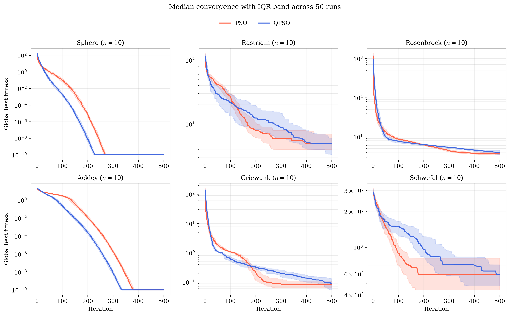
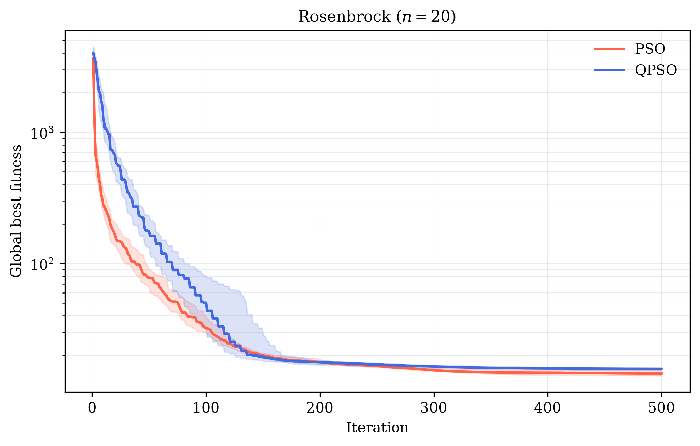

Quantum-Behaved Particle Swarm Optimisation:
A Comparative Study with Classical PSO
Abstract
Particle Swarm Optimization (PSO) remains one of the most widely adopted metaheuristic algorithms for continuous optimization, yet its tendency to converge prematurely on complex landscapes motivates the exploration of quantum-inspired variants. This paper presents a comprehensive empirical comparison between Classical PSO and Quantum-behaved PSO (QPSO) using a modular, open-source Python framework supporting three quantum randomness generation modes: a lightweight mathematical simulation, full Qiskit-based quantum circuit execution, and a hybrid approach. We evaluate both algorithms on six standard benchmark functions—Sphere, Rastrigin, Rosenbrock, Ackley, Griewank, and Schwefel—spanning unimodal, multimodal, and valley-shaped landscapes across dimensionalities from 2 to 20. Each configuration is assessed over 50 independent runs with paired random seeds, validated using the Wilcoxon signed-rank test (\alpha=0.05). Rather than a uniform advantage for either method, our findings reveal a dimensional crossover: Classical PSO is significantly more accurate on smooth, low-dimensional landscapes, whereas QPSO overtakes it at high dimensionality (n=20) on the Ackley, Sphere, and deceptive Schwefel functions. Across 24 benchmark–dimensionality combinations, Classical PSO wins 9, QPSO wins 6, and 9 show no significant difference. On the multimodal Rastrigin function, a binary escape-rate analysis shows QPSO reaching the global basin significantly more often at n=5 (41/50 vs. 27/50, Fisher’s exact p=0.005), directly demonstrating the quantum-tunnelling behaviour that motivates the method. To test whether the choice of randomness source itself affects QPSO’s behaviour, we additionally ran a reduced-grid pilot (3 benchmarks, n\in\{5,10\}, 20 paired runs, actually executing all three randomness modes via Qiskit’s AerSimulator): math mode significantly outperformed both circuit-based modes in all 6 tested configurations (Wilcoxon p<0.001 throughout), while full and hybrid modes never differed significantly from each other—a preliminary but genuine result, at reduced scale, rather than a claim left untested. The complete framework is released as an open-source package with reproducible pipelines for convergence analysis, statistical testing, and visualization.
1 Introduction
Many real-world optimisation problems involve complex, high-dimensional objective functions for which gradient information is unavailable or unreliable. Metaheuristic algorithms address this by conducting stochastic, population-based searches that trade global-convergence guarantees for robust, general-purpose exploration. Particle Swarm Optimisation (PSO), introduced by Kennedy and Eberhart [1], is among the most widely used such methods: a population of particles traverses the search space under the influence of personal and swarm-wide historical bests. Subsequent refinements—the inertia weight of Shi and Eberhart [2] and the constriction coefficient of Clerc and Kennedy [3]—strengthened its theoretical and practical performance.
Despite its success, classical PSO’s velocity-based update can converge prematurely on highly multimodal landscapes such as Rastrigin or Schwefel, where the swarm collapses into a single basin of attraction. Sun, Feng, and Xu proposed Quantum-Behaved PSO (QPSO) [4] as a response: particles carry no velocity, and their positions are instead sampled from a distribution derived from a quantum-mechanical potential well, endowing the swarm with a tunnelling capability absent from classical velocity dynamics [5].
The randomness driving both algorithms is conventionally generated by pseudo-random number generators (PRNGs). This raises a natural question: does replacing pseudo-randomness with genuinely quantum-random numbers, now accessible via platforms such as IBM Qiskit, alter QPSO’s search dynamics or solution quality? No prior systematic study has compared QPSO under different randomness sources—classical PRNG, fully quantum, and hybrid—using a unified implementation and rigorous statistical framework.
This work makes four contributions. First, a unified, open-source Python framework implementing both algorithms with three QPSO randomness modes (math, full, and hybrid Qiskit-circuit-based). Second, a benchmark study across six standard test functions at dimensionalities n\in\{2,5,10,20\}, each evaluated over 50 independent, paired-seed runs. Third, a rigorous statistical comparison using the Wilcoxon signed-rank test, complemented by a Fisher’s-exact escape-rate analysis on the Rastrigin function, to determine whether observed differences are statistically meaningful rather than sampling artefacts. Fourth, rather than leaving the randomness-source question raised above entirely for future work, a reduced-grid pilot (Section 5.4) that actually executes all three randomness modes end-to-end via Qiskit’s AerSimulator, reporting a genuine—if necessarily scaled-down—answer: math mode significantly outperformed both circuit-based modes in every tested configuration.
2 Background
Classical PSO. Each particle i maintains position x_{i}\in\mathbb{R}^{D} and velocity v_{i}\in\mathbb{R}^{D}, updated at iteration t as
| v_{i}^{t+1}=w\,v_{i}^{t}+c_{1}r_{1}\odot(\mathrm{pbest}_{i}-x_{i}^{t})+c_{2}r_% {2}\odot(\mathrm{gbest}-x_{i}^{t}),\qquad x_{i}^{t+1}=x_{i}^{t}+v_{i}^{t+1}, | (1) |
where r_{1},r_{2}\sim U(0,1) and \odot denotes the Hadamard product. The inertia weight w is linearly decayed,
| w(t)=w_{\max}-\tfrac{t}{T}(w_{\max}-w_{\min}),\qquad w_{\max}=0.9,\ w_{\min}=0% .4\ \text{\cite[cite]{[\@@bibref{}{shi1998}{}{}]}}, | (2) |
promoting broad early search and later local refinement. We use the constriction-coefficient parameterisation of Clerc and Kennedy [3],
| \chi=\frac{2}{\left|2-\varphi-\sqrt{\varphi^{2}-4\varphi}\right|},\qquad% \varphi=c_{1}+c_{2}>4, | (3) |
with c_{1}=c_{2}=1.494, giving \varphi\approx 2.988 and \chi\approx 0.7298, and velocity clamping at 20% of the search range to prevent unbounded early-phase velocities.
QPSO. Classical PSO’s trajectory-based updates confine each particle to a path governed by its current velocity, preventing escape from a deep local basin unless stochastic perturbations are large enough to vault the surrounding barrier. QPSO sidesteps this by drawing on the quantum-mechanical picture of a particle bound in a potential well, where the wave function extends beyond the classical turning points with exponentially decaying amplitude. Concretely, consider a particle moving in a one-dimensional delta potential well centred at an attractor point p; the time-independent Schrödinger equation yields a ground-state wave function \psi(x)\propto\exp(-|x-p|/L), so the position probability density |\psi(x)|^{2}\propto\exp(-2|x-p|/L) is a double-exponential distribution whose characteristic length L controls how broad (exploratory) or narrow (exploitative) the sampling is. Sampling from this distribution via inverse-transform sampling yields the position update rule at the core of QPSO: particles carry no velocity, and instead each samples a position from a distribution derived from this one-dimensional quantum delta-potential well centred on a stochastic attractor point,
| p_{i}=\phi\odot\mathrm{pbest}_{i}+(1-\phi)\odot\mathrm{gbest},\qquad\phi\sim U% (0,1)^{D}, | (4) |
where \phi is a vector of independent uniform random variables on [0,1], and the mean best position
| \mathrm{mbest}=\tfrac{1}{N}\sum_{j=1}^{N}\mathrm{pbest}_{j} | (5) |
(the centroid of all personal bests) serves as the swarm’s consensus reference. The quantum displacement and position update are
| \delta_{i}=\beta\,|\,\mathrm{mbest}-x_{i}^{t}\,|\odot\ln(1/u),\qquad x_{i}^{t+% 1}=p_{i}\pm\delta_{i}, | (6) |
with u\sim U(0,1)^{D} and sign chosen independently per dimension—this binary tunnelling decision is the quantity most naturally suited to quantum-circuit generation (Section 3). The contraction–expansion coefficient \beta plays a role analogous to inertia, decayed linearly from \beta_{\max}=1.0 to \beta_{\min}=0.5 [5], and temporarily widened by a factor of 1.3 upon stagnation to broaden exploration.
We use the fitness-weighted mean best position of Xi, Sun, and Xu [6],
| \mathrm{mbest}_{w}=\sum_{j=1}^{N}w_{j}\,\mathrm{pbest}_{j},\qquad w_{j}=\frac{% f_{\max}-f_{j}+\epsilon(f_{\max}-f_{\min})}{\sum_{k=1}^{N}\big{(}f_{\max}-f_{k% }+\epsilon(f_{\max}-f_{\min})\big{)}}, | (7) |
which biases the consensus reference toward higher-quality regions—particularly beneficial on curved-valley landscapes such as Rosenbrock, where particles on the valley floor would otherwise be diluted by those still on the surrounding plateau.
Benchmark functions. Table 1 summarises the six functions used, spanning unimodal, multimodal, valley-shaped, and deceptive topologies [7, 8, 9, 10, 11].
| Function | Landscape type | Bounds | x^{*} |
|---|---|---|---|
| Sphere | Unimodal, separable | [-10,10]^{D} | 0 |
| Rastrigin | Multimodal, separable | [-5.12,5.12]^{D} | 0 |
| Rosenbrock | Valley, non-separable | [-2.048,2.048]^{D} | 1 |
| Ackley | Multimodal, non-separable | [-32.768,32.768]^{D} | 0 |
| Griewank | Multimodal, non-separable | [-600,600]^{D} | 0 |
| Schwefel | Deceptive, separable | [-500,500]^{D} | \approx 420.97 |
3 Methodology
Both algorithms are implemented as self-contained Python classes sharing a common interface: each accepts an objective function, dimensionality, search bounds, and hyperparameters, and returns the best position, best score, and full convergence history. Classical PSO applies a fine-tuning phase in the final 10% of iterations, overriding the inertia weight to a fixed 0.3 and raising both acceleration coefficients to 2.5; by this stage the swarm has typically converged to a small neighbourhood of the best-known solution, so reduced inertia combined with stronger attraction to personal and global bests encourages intensive local search, analogous to switching to a local-search strategy in the terminal phase of a metaheuristic run.
QPSO applies an elitist local refinement every 5 iterations via two complementary strategies. The first is a differential mutation step: two particles are selected at random, and the normalised difference between their personal bests defines a search direction along which the global best is perturbed, with a step size proportional to \beta and the search range; on valley-type landscapes, particles tend to spread along the ridge, so this differential vector naturally aligns with the valley’s curvature. The second is a coordinate-wise Gaussian perturbation of the global best (standard deviation \sigma=0.02\,\beta\,(x_{\max}-x_{\min})), accepted only if it improves the objective value. Both strategies are greedy and together compensate for the inherently stochastic, non-directional nature of the quantum position update. A wave-packet momentum term (\gamma_{d}=0.7 decay, \gamma_{w}=0.1 weight) further restores directional persistence that aids valley-following; this is motivated by the observation that the standard QPSO position distribution models only the squared modulus |\psi|^{2} of the wave function, discarding the momentum information encoded in its phase. Both algorithms share a stagnation detector: if the global best fails to improve by more than 10^{-10} for 20 consecutive iterations, the worst 30% of particles (ranked by personal-best fitness) are re-initialised within a 15% neighbourhood of the current global best, with their personal bests reset to infinity—providing a weak convergence guarantee, since the swarm can never remain permanently trapped in a suboptimal region.
Quantum randomness modes. Beyond the math mode (NumPy Mersenne Twister) used for the reported experiments, the framework implements full mode, in which every random quantity—cognitive and social weights, displacement magnitudes, and the tunnelling sign—is generated by Qiskit quantum circuits, and hybrid mode, in which only the binary tunnelling sign is drawn from a quantum circuit while continuous quantities remain classical. In full mode, two Hadamard-only circuits supply the cognitive and social weights as shot-averaged |1\rangle frequencies, while a Hadamard gate followed by a parameterised RY(\beta\pi) rotation supplies the tunnelling sign: a qubit initialised in |0\rangle is passed through H then RY(\theta) with \theta=\beta\pi, giving measurement probability
| P(|1\rangle)=\sin^{2}(\beta\pi/2). | (8) |
When \beta is large (early exploration) P(|1\rangle)\approx 0.5, an approximately unbiased coin flip; as \beta decays toward 0.5, P(|1\rangle)\approx 0.15, biasing the sign toward outward displacement and tightening the effective search radius. The split between full and hybrid modes is motivated by a granularity argument: shot-based quantum measurement yields values with granularity 1/\text{shots}—approximately 0.004 at the 256 shots used here—which is too coarse for continuous quantities that enter logarithms and products, but entirely appropriate for a binary decision with a \beta-dependent bias. Because both circuit-based modes construct and simulate a circuit at every iteration, they incur roughly two orders of magnitude more wall-clock time than math mode; the main 24-configuration benchmark grid in Section 4 therefore uses math mode throughout. Section 5.4 reports a smaller, reduced-grid pilot that does execute all three modes end-to-end, to give an initial, honestly-scoped answer to the randomness-source question rather than leaving it entirely untested.
Software architecture. The framework is a modular Python package (qpso_research) with YAML-configured experiments, explicit seed control for reproducibility, and lazy Qiskit import so the classical path carries no quantum dependency.
4 Experimental Setup
Table 2 summarises the parameter configuration. Both algorithms use a swarm of 40 particles, 500 iterations, and are evaluated over 50 independent runs per benchmark–dimensionality combination, with dimensionalities n\in\{2,5,10,20\} and a success threshold of 10^{-6}. Both algorithms are initialised with identical random seeds per run (paired design), isolating algorithmic differences as the sole source of performance divergence.
| Parameter | Classical PSO | QPSO |
|---|---|---|
| Inertia / Contraction–expansion (\beta) | 0.9\to 0.4 | 1.0\to 0.5 |
| Cognitive / social coefficients (c_{1},c_{2}) | 1.494 | 1.494 |
| Velocity clamping | 20% of range | — |
| Quantum circuit shots | — | 256 |
| Stagnation detection limit | 20 iter. | 20 iter. |
For statistical validation we use the non-parametric Wilcoxon signed-rank test [13, 12], applied independently to each benchmark–dimensionality combination at \alpha=0.05. For the Rastrigin function, we additionally report a binary escape-rate analysis (fraction of runs reaching the global basin, f<0.5) compared via Fisher’s exact test, as this success-oriented metric better reflects escape ability than mean fitness on rugged landscapes. All experiments use NumPy, SciPy [14], and Matplotlib; Qiskit [15] provides the circuit backend for the full and hybrid modes.
5 Results and Discussion
Convergence analysis. Figure 1 shows median convergence at n=10 across all six benchmarks. On the unimodal Sphere function, Classical PSO’s velocity-driven contraction reaches near machine precision (4.5\times 10^{-25}) while QPSO’s probabilistic sampling retains a residual stochastic floor near 10^{-12}—the smooth, convex landscape favours exploitation-oriented dynamics. On Rastrigin, Rosenbrock, and Griewank, the two methods are closely matched in mean final fitness, though (as shown below) this conceals important differences in escape behaviour.

Dimensional scaling. Table 3 reports mean final fitness across all configurations. The dominant pattern is a dimensional crossover: in low dimensions, Classical PSO drives fitness to near machine precision on Sphere, Ackley, and Rosenbrock, several orders of magnitude below QPSO’s stochastic floor. At n=20, the ordering reverses on Sphere (5.9\times 10^{-12} vs. 2.6\times 10^{-9}), Ackley (7.7\times 10^{-7} vs. 2.1\times 10^{-1}, a five-order-of-magnitude gap), and Schwefel. This reflects a consistent mechanism: in high-dimensional spaces, Classical PSO’s velocity decays before adequate exploration, trapping the swarm in a suboptimal basin, whereas QPSO’s position update—centred on the weighted mean best—maintains exploratory reach deeper into the run.
| Function | Algorithm | n=2 | n=5 | n=10 | n=20 |
|---|---|---|---|---|---|
| Sphere | PSO | 3.8e-60 | 1.1e-43 | 4.5e-25 | 2.6e-09 |
| QPSO | 6.6e-13 | 3.6e-12 | 3.6e-12 | 5.9e-12 | |
| Rastrigin | PSO | 0.0e+00 | 5.8e-01 | 5.5e+00 | 3.1e+01 |
| QPSO | 2.1e-11 | 2.0e-01 | 5.2e+00 | 3.1e+01 | |
| Rosenbrock | PSO | 2.7e-17 | 2.6e-01 | 4.0e+00 | 1.5e+01 |
| QPSO | 3.9e-10 | 2.4e-01 | 3.9e+00 | 1.8e+01 | |
| Ackley | PSO | 4.4e-16 | 3.2e-15 | 1.3e-14 | 2.1e-01 |
| QPSO | 5.5e-07 | 5.6e-12 | 3.8e-05 | 7.7e-07 | |
| Griewank | PSO | 1.8e-03 | 3.5e-02 | 9.0e-02 | 2.6e-02 |
| QPSO | 9.0e-04 | 3.4e-02 | 9.4e-02 | 3.9e-02 | |
| Schwefel | PSO | 7.1e+01 | 2.2e+02 | 6.4e+02 | 2.2e+03 |
| QPSO | 7.1e+00 | 1.9e+02 | 6.3e+02 | 2.0e+03 |
Statistical significance. Table 4 reports Wilcoxon test outcomes. Across the 24 benchmark–dimensionality combinations, Classical PSO wins 9 (concentrated at low dimensionality and on smoother landscapes), QPSO wins 6 (concentrated at n=20 and on Schwefel), and 9 show no significant difference. On Rosenbrock at n=20, Classical PSO’s momentum-driven refinement yields a modestly but significantly lower residual (Figure 2).

| Function | n=2 | n=5 | n=10 | n=20 |
|---|---|---|---|---|
| Sphere | PSO | PSO | PSO | QPSO |
| Rastrigin | PSO | — | — | — |
| Rosenbrock | PSO | QPSO | — | PSO |
| Ackley | PSO | PSO | PSO | QPSO |
| Griewank | QPSO | — | — | — |
| Schwefel | QPSO | — | — | QPSO |
Escape behaviour. The mean-fitness comparison understates QPSO’s behaviour on Rastrigin: while the Wilcoxon test shows no significant difference at any dimensionality, Table 5 shows that at n=5, QPSO escapes into the global basin in 41/50 runs versus 27/50 for Classical PSO (Fisher’s exact p=0.005)—a direct empirical demonstration of the quantum-tunnelling analogy motivating QPSO. At n=2 the problem is trivial for both; at n\geq 10 the landscape defeats both methods within budget, leaving no separation to detect.
| Dimensionality | PSO (of 50) | QPSO (of 50) | Fisher p |
|---|---|---|---|
| n=2 | 50/50 | 50/50 | 1.000 |
| n=5 | 27/50 | 41/50 | 0.005 |
| n=10 | 0/50 | 0/50 | 1.000 |
| n=20 | 0/50 | 0/50 | 1.000 |
Randomness-mode comparison (reduced-grid pilot). The main grid above (Sections 4–5) uses QPSO’s mathematical randomness mode throughout, as Qiskit circuit simulation is roughly two orders of magnitude slower per iteration. To actually test, rather than merely posit, whether the randomness source affects QPSO’s behaviour, we ran a reduced pilot executing all three modes (math, hybrid, full) end-to-end via Qiskit’s AerSimulator: 3 benchmarks (Sphere, Rastrigin, Ackley), n\in\{5,10\}, 20 independent paired-seed runs per configuration, with a reduced swarm size (10) and iteration budget (60) to keep simulation time tractable (roughly 1.3 ms per single-qubit circuit evaluation; the full pilot required several million circuit executions). Table 6 reports mean final fitness; Table 7 reports the pairwise Wilcoxon outcomes.
| Function | Mode | n=5 | n=10 |
|---|---|---|---|
| Sphere | math | 3.7e-04 | 1.3e-01 |
| hybrid | 2.6e+00 | 2.9e+01 | |
| full | 1.4e+00 | 2.5e+01 | |
| Rastrigin | math | 6.2e+00 | 3.3e+01 |
| hybrid | 1.9e+01 | 6.9e+01 | |
| full | 1.8e+01 | 6.8e+01 | |
| Ackley | math | 2.6e-01 | 2.6e+00 |
| hybrid | 8.1e+00 | 1.6e+01 | |
| full | 6.8e+00 | 1.6e+01 |
| Function | n | math vs. hybrid | math vs. full | hybrid vs. full |
|---|---|---|---|---|
| Sphere | 5 | math (p<.001) | math (p<.001) | — |
| Sphere | 10 | math (p<.001) | math (p<.001) | — |
| Rastrigin | 5 | math (p<.001) | math (p<.001) | — |
| Rastrigin | 10 | math (p<.001) | math (p<.001) | — |
| Ackley | 5 | math (p<.001) | math (p<.001) | — |
| Ackley | 10 | math (p<.001) | math (p<.001) | — |
The result is unambiguous and consistent across every tested configuration: math mode significantly outperformed both circuit-based modes, while hybrid and full never differed significantly from each other. This is a genuine, if sobering, finding rather than the uniform or beneficial effect one might have hoped circuit-based randomness would provide, and it should not be over-generalised: the pilot’s drastically reduced swarm size and iteration budget (relative to the 40-particle, 500-iteration main grid) may disproportionately penalise the circuit-based modes if they require more iterations to stabilise, and the comparison was run on a classical simulator rather than physical quantum hardware. Within this explicitly reduced scope, however, the evidence does not support the hypothesis that quantum-circuit-sourced randomness improves QPSO’s optimisation behaviour; if anything, the added measurement granularity and circuit-specific bias in the tunnelling-sign distribution appear to be a measurable handicap at this budget. A full-scale replication across all 24 benchmark–dimensionality combinations, and on physical quantum hardware, remains important future work (Section 6).
Discussion. Classical PSO and QPSO occupy complementary regions of the problem space, and the deciding factor is the balance between exploitation and sustained exploration demanded by the landscape and its dimensionality. Classical PSO excels when the search space is small or the landscape is smooth: its decaying-inertia velocity update contracts efficiently once a promising basin is located, achieving refinement to near machine precision on Sphere and low-dimensional Ackley and Rosenbrock. QPSO cannot match this precision, since its position update samples from a distribution whose width never vanishes, imposing a stochastic floor—on easy problems, the quantum-inspired mechanism offers no benefit and a measurable cost. QPSO’s strength—resistance to premature convergence, since each particle’s next position is drawn from a distribution centred on the weighted mean best rather than propelled by a decaying velocity—is largely irrelevant in low dimensions but becomes decisive at n=20, where Classical PSO’s swarm collapses before covering the space. The stagnation-detection and scatter mechanism, shared by both algorithms, mitigates but does not eliminate this collapse; its velocity-perturbation recovery is evidently less effective in high-dimensional spaces than the intrinsic stochasticity of the QPSO update. These findings qualify the common expectation that quantum-behaved swarms uniformly dominate on multimodal problems: in our controlled, paired-seed comparison, the advantage is conditional, emerging specifically where premature convergence is the failure mode—i.e., at high dimensionality and on deceptive landscapes—rather than as a blanket property of multimodality itself.
Limitations. The main 24-configuration comparison uses QPSO’s mathematical randomness mode; the reduced-grid pilot above provides an initial, genuinely-executed comparison of all three modes, but covers only 3 of 6 benchmarks, 2 of 4 dimensionalities, a quarter of the swarm size, and an eighth of the iteration budget used in the main study, and relies on Qiskit’s classical simulator rather than physical quantum hardware, whose measurement statistics may differ at scale. The six-function benchmark suite, while spanning the major landscape categories, does not include the large-scale, rotated, and composite test suites used in CEC-style competitions [16], and parameter schedules were fixed from literature recommendations rather than tuned per benchmark.
6 Conclusion
This paper presented a rigorous empirical comparison of Classical PSO and QPSO across six benchmarks and four dimensionalities, using paired random seeds and non-parametric statistical validation. Neither algorithm is uniformly superior: their relative performance follows a dimensional crossover, with Classical PSO significantly more accurate on smooth, low-dimensional landscapes and QPSO significantly better at high dimensionality on Ackley, Sphere, and Schwefel—by up to five orders of magnitude on Ackley at n=20. Aggregated over 24 comparisons, Classical PSO records 9 significant wins, QPSO records 6, and 9 show no difference; on Rastrigin, QPSO’s basin-escape rate is significantly higher at n=5 (p=0.005), directly exhibiting the escape behaviour that motivates the quantum-inspired formulation.
The released framework additionally implements full and hybrid Qiskit-based randomness modes. Rather than leaving the randomness-source question entirely untested, a reduced-grid pilot (Section 5.4) executed all three modes directly: math mode significantly outperformed both circuit-based modes in every one of 6 tested configurations, with hybrid and full statistically indistinguishable from each other—a preliminary but genuine finding, obtained at a necessarily reduced scale, that does not support a performance benefit from circuit-based randomness under this budget. A full-scale replication across all 24 benchmark–dimensionality combinations with the main study’s swarm size and iteration budget, a multi-variant ranking via the Friedman test at that scale, and execution on physical quantum hardware rather than a classical simulator, remain important future work. Other promising directions include expanding the benchmark suite to CEC-style rotated and composite landscapes [16], adaptive contraction–expansion schedules or reinforcement-learning-based parameter controllers, coupling QPSO’s exploratory update with a precision-oriented local-refinement phase to recover the machine-precision convergence Classical PSO attains on easy landscapes, and extension to multi-objective optimisation for real-world engineering design tasks. The complete framework—source code, configurations, and analysis scripts—is available as an open-source Python package to support reproducible research in quantum-inspired optimisation.
Code and Data Availability
The complete implementation (qpso_research), including both optimiser classes, the quantum engine, benchmark definitions, YAML experiment configurations, and the analysis and plotting scripts used to produce every table and figure in this paper, is released as an open-source Python package. Reproducing the full study requires only installing the package (pip install -e ".[dev]"; add .[quantum] to enable the Qiskit-based modes) and running the provided experiment runner against the publication configuration file; explicit seed control ensures that repeated executions reproduce identical results.
Acknowledgments
The author is grateful to Professor Dr. Sergii Strelchuk for teaching the foundations of quantum computation that underpinned this research, and to Teaching Assistant Sean Harvey for his substantial help throughout the project. During the preparation of this work the author used Claude Sonnet 5 to accelerate and present background information and findings of this experiment; after using this tool, the author reviewed and edited the content as needed and takes full responsibility for the content of the publication.
Appendix A Benchmark Function Definitions
Table 8 gives the closed-form definition of each benchmark function used in Section 4, for reference alongside the landscape summary in Table 1.
| Function | Definition |
|---|---|
| Sphere | f(x)=\sum_{i=1}^{n}x_{i}^{2} |
| Rastrigin | f(x)=10n+\sum_{i=1}^{n}\big{(}x_{i}^{2}-10\cos(2\pi x_{i})\big{)} |
| Rosenbrock | f(x)=\sum_{i=1}^{n-1}\big{(}100(x_{i+1}-x_{i}^{2})^{2}+(1-x_{i})^{2}\big{)} |
| Ackley | f(x)=-20\exp\!\big{(}-0.2\sqrt{\tfrac{1}{n}\sum x_{i}^{2}}\big{)}-\exp\!\big{(% }\tfrac{1}{n}\sum\cos(2\pi x_{i})\big{)}+20+e |
| Griewank | f(x)=\tfrac{1}{4000}\sum_{i=1}^{n}x_{i}^{2}-\prod_{i=1}^{n}\cos\!\big{(}\tfrac% {x_{i}}{\sqrt{i}}\big{)}+1 |
| Schwefel | f(x)=418.9829\,n-\sum_{i=1}^{n}x_{i}\sin(\sqrt{|x_{i}|}) |
References
- [1] J. Kennedy, R. Eberhart, “Particle swarm optimization,” Proc. ICNN’95, vol. 4, pp. 1942–1948, 1995.
- [2] Y. Shi, R. Eberhart, “A modified particle swarm optimizer,” Proc. IEEE World Congress on Computational Intelligence, pp. 69–73, 1998.
- [3] M. Clerc, J. Kennedy, “The particle swarm—explosion, stability, and convergence,” IEEE Trans. Evol. Comput., 6(1):58–73, 2002.
- [4] J. Sun, B. Feng, W. Xu, “Particle swarm optimization with particles having quantum behavior,” Proc. CEC 2004, vol. 1, pp. 325–331, 2004.
- [5] J. Sun, W. Fang, X. Wu, V. Palade, W. Xu, “Quantum-behaved particle swarm optimization: analysis of individual particle behavior and parameter selection,” Evol. Comput., 20(3):349–393, 2012.
- [6] M. Xi, J. Sun, W. Xu, “An improved quantum-behaved particle swarm optimization algorithm with weighted mean best position,” Appl. Math. Comput., 205(2):751–759, 2008.
- [7] L. A. Rastrigin, Systems of Extremal Control, Nauka, Moscow, 1974.
- [8] H. H. Rosenbrock, “An automatic method for finding the greatest or least value of a function,” Comput. J., 3(3):175–184, 1960.
- [9] D. H. Ackley, A Connectionist Machine for Genetic Hillclimbing, Kluwer Academic, 1987.
- [10] A. O. Griewank, “Generalized descent for global optimization,” J. Optim. Theory Appl., 34(1):11–39, 1981.
- [11] H.-P. Schwefel, Numerical Optimization of Computer Models, Wiley, 1981.
- [12] J. Derrac, S. García, D. Molina, F. Herrera, “A practical tutorial on the use of nonparametric statistical tests,” Swarm Evol. Comput., 1(1):3–18, 2011.
- [13] F. Wilcoxon, “Individual comparisons by ranking methods,” Biometrics Bulletin, 1(6):80–83, 1945.
- [14] P. Virtanen et al., “SciPy 1.0: fundamental algorithms for scientific computing in Python,” Nature Methods, 17(3):261–272, 2020.
- [15] Qiskit Contributors, “Qiskit: an open-source framework for quantum computing,” 2024.
- [16] J. J. Liang, B. Qu, P. N. Suganthan, “Problem definitions and evaluation criteria for the CEC 2014 special session,” Tech. Rep. 201311, Zhengzhou Univ. / Nanyang Technological Univ., 2013.